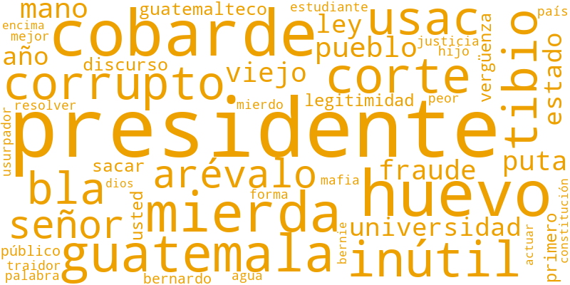
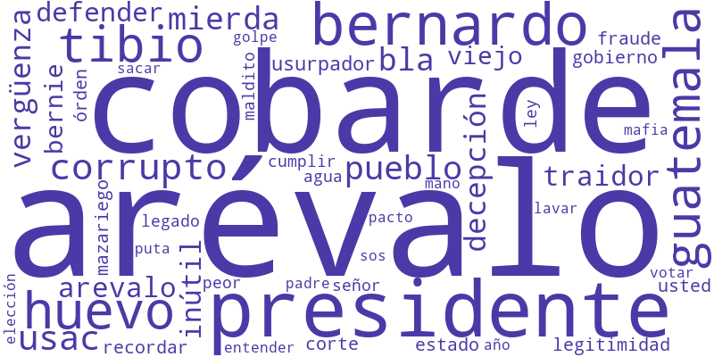
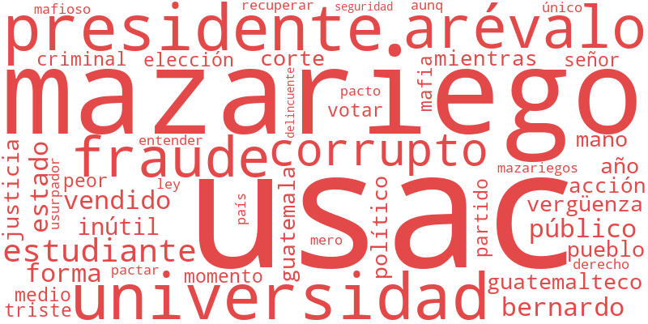
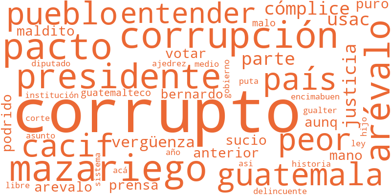
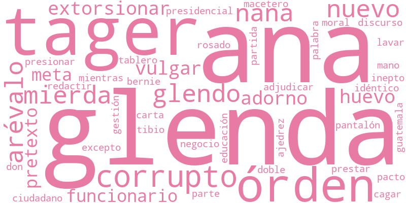
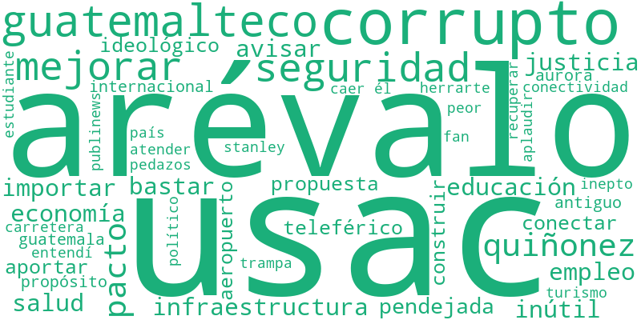

Se identificaron 29 publicaciones en Brand24 con un alcance mayor a 20,000 vistas sobre Ana Glenda Tager, la USAC, Ricardo Quiñonez y el plan de infraestructura. A partir de esas publicaciones semilla se construyó la red de comentarios, quote-tweets y followers/following, y se separaron las cuentas de medios de comunicación del resto de la conversación.
Se clasifica como inorgánica a toda cuenta con una relación mayor a 10:1 entre cuentas seguidas y seguidores (siguiendo a más de 500 cuentas), o con mucha interacción saliente y casi ninguna respuesta.
Los 7 medios confirmados (lahoragt, soy_502, eP_investiga, DiariodeCA, NuestroDiario, CanalAntigua, PublinewsGT) se agrupan de forma natural en su propio clúster de la red — tiene sentido: comparten buena parte de su audiencia entre sí.

Narrativas en las reacciones a sus tuits (comentarios y quotes sobre publicaciones de medios, 481 textos analizados):
La narrativa más grande del corpus actual: enojo y desencanto con Bernardo Arévalo y el partido Semilla, acusaciones de tibieza y traición al voto que los llevó al poder.

Eje discursivo: "tibios", "traidor", "decepción", "cobarde", "usurpador", "legitimidad", "exilio".
Conversación centrada en la crisis de la Universidad de San Carlos: acusaciones de fraude, la figura del rector Mazariegos y el proceso de elecciones universitarias.

Eje discursivo: "usac", "universidad", "estudiantes", "mazariegos", "rector", "fraude", "elecciones".
Denuncias de pactos a puerta cerrada y corrupción.

Eje discursivo: "corrupción", "pacto", "cacif", "mordida", "cómplice".
Menciones directas y específicas a Ana Glenda Tager como figura — un subconjunto pequeño dentro del corpus actual.

Eje discursivo: "tager", "glenda".
Con los datos descargados hasta ahora, este eje apenas aparece (6 cuentas, muy pocas menciones directas a "infraestructura", "Quiñonez", "aeropuerto" o "carretera"). Si este tema es central para el proyecto, probablemente falte bajar más tuits semilla enfocados específicamente aquí.

Eje discursivo: "quiñonez", "infraestructura", "aeropuerto", "carretera", "obra", "contrato", "licitación", "presupuesto".
La red contiene 5,106 cuentas inorgánicas (9.23%) con comportamiento estructuralmente anómalo:
Muestra de cuentas sospechosas identificadas:
Se identificaron las 20 cuentas con mayor centralidad (más interacciones recibidas) como las que más impulsan las narrativas del debate. Actúan como puentes de información entre los distintos clústeres temáticos. Aquí se incluyen tanto esas 20 cuentas como los medios de comunicación confirmados.
Observa el zoom a los perfiles más influyentes y los medios — sus conexiones cruzadas conectan las distintas narrativas.
Puedes colocar el cursor sobre los nodos más grandes del canvas para ver su identificador y rol.